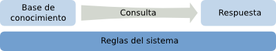

Escogiendo una definición para los datos
Un sistema para administrar el conocimiento puede ser descrito por las componentes de la siguiente figura:

Un repositorio donde ponemos las unidades del conocimiento actual, un lenguaje para hacer consultas y un lenguaje para las respuestas obtenidas. Bajo estas tres componentes se encuentra un conjunto de reglas que permiten responder la consulta. Hablamos de conocimiento en vez de datos, porque nos situamos en un caso general. Los datos pueden ser vistos como un caso particular, en el cual el lenguaje logra un buen compromiso entre la expresividad y la complejidad. De lo contrario, no sería útil en la práctica.
Para empezar nuestra búsqueda del concepto de dato, pensemos en lo más expresivo, pero también complejo, que tenemos entre los lenguajes formales: el lenguaje de la lógica.
En lógica la base de conocimiento está formada de unidades llamadas fórmulas. Una consulta es una fórmula más, por ejemplo:
(∄ n)( n>2 ∧ (∃ a,b,c)( an + bn = cn ) )
Responder a la consulta significa verificar si las reglas del sistema nos permiten llegar en un número finito de pasos desde las fórmulas en la base de conocimiento hasta la formula de la consulta. La respuesta podría ser T si es que logramos encontrar dichos pasos o F si es que encontramos una secuencia de pasos hasta la formula negada.
Como bien conocemos, la fórmula de arriba es bastante compleja para ser resuelta fácilmente, en efecto, fue conjeturada en 1637, pero no se demostró hasta 1995. A veces es posible demostrar que nunca podremos llegar a una respuesta, pero hacer este tipo de demostraciones es también una tarea difícil, por lo que en muchos casos nos encontramos con que no hemos logrado llegar a la respuesta y tampoco sabemos si es posible llegar a ella. De este modo, el lenguaje de la lógica es un lenguaje altamente expresivo, pero demasiado complejo para ser útil como lenguaje para almacenar datos.
Una reducción de la lógica son las cláusulas de Horn, es decir, fórmulas de la forma:
¬p ∨ ¬q ∨ ⋯ ∨ ¬r ∨ s
O equivalentemente:
( p ∧ q ∧ ⋯ ∧ r ) → s
Cada uno de los elementos p, q, r, s representan fórmulas tales como p(u,⋯,v). Donde p es un predicado n-ario y los argumentos u,⋯,v son términos, que pueden ser constantes, literales o variables. Además, existen dos tipos de proposiciones especiales, la proposición verdadera (T) y la proposición falsa (F). La proposición verdadera nos permite definir un tipo de cláusula que llamamos hecho:
T → p(u,⋯,v)
Las cláusulas como F → p(u,⋯,v) pueden ser omitidas, porque no aportan información. El resto de las cláusulas de Horn son llamadas reglas.
Considerando sólo las cláusulas de Horn nuestra base de conocimiento puede ser un conjunto de reglas y hechos. Una consulta es un hecho que puede contener variables y la respuesta dicha consulta es conjunto de todos los hechos que pueden ser deducidos de la base de conocimiento y que instancien las variables de la consulta. Las reglas del sistema (no las de la base de conocimiento) definen un algoritmo conocido como resolución, que es implementado en lenguajes como Prolog.
Si quitamos las reglas de la base de conocimiento, quedándonos sólo con hechos con argumentos literales, el resultado será el modelo relacional. Los hechos serán cláusulas de la forma:
T → p(x1,x2,x3,⋯,xn)
donde p representa a la relación (o tabla) y los elementos x1,x2,x3,⋯,xn son los términos literales.
El lenguaje de consulta más usado en el modelo relacional es SQL, por ejemplo:
SELECT a.x, b.y FROM a, b WHERE a.u = b.v;
Podemos resolver dicha consulta, mapeándola a un sistema con cláusulas de Horn, agregando la siguente regla al conjunto de hechos correspondiente a los datos relacionales:
a(x,u), b(y,u) → r(x,y)
De esta manera, responder a la consulta en el modelo relacional equivale a responder la consulta r(x,y) en el sitema de cláusulas de Horn.
De igual modo, obtenemos el modelo de triples de RDF, al quitar las reglas y dejar sólo los hechos de la forma:
T → p(s, o)
donde p representa un predicado, s un sujeto (variable o constante) y o un objeto (constante, variable o literal). En RDF las variables son llamadas nodos blancos y las constantes son las URI.
El lenguaje de consulta más usado para RDF es SPARQL, por ejemplo:
SELECT ?x, ?y
WHERE {
?u p ?x .
?u q ?y .
};
Donde p, q corresponden a predicados, mientras que ?x, ?y, ?u son variables. Para codificar la misma pregunda en el lenguaje de las cláusulas de Horn debemos por r(x,y) agregando previamente la regla:
p(x,u), q(y,v) → r(x,y)
De este modo, tanto en el modelo relacional como en RDF, es posible obtener un conjunto de hechos que instancian una consulta según el modelo de cláusulas de Horn.
¿Hay algo más complejo que los hechos y que merezca también ser considerado dato? ¿Qué se puede, por ejemplo, decir sobre las bases de datos geográficas, espaciales, semi-estructuradas o XML? Para intentar resolver esta pregunta vamos a tomar el caso de las bases de datos XML. Marcelo Arenas y Leonid Libkin, en “A normal Form for XML Documents”, definen el siguiente concepto de tuplas en los documentos XML: Una tupla es una función t : P → E, donde P es el conjunto de los las rutas desde la raíz a cada uno de los nodos posibles del árbol XML y E es un valor que un documento tendría en el último nodo de la ruta (incluyendo el elemento nulo). Las tuplas está restringidas por ciertas propiedades, entre las que se encuetra que debe haber una cantidad finita de rutas tales que t(p) no es nulo. Aprovechando esta finitud podemos hacer un primer intento para expresar las tuplas XML como clásulas de horn mediante un cojunto de hechos de la forma:
T →τ(e,p)
para cada par elemento p tal que t(p) = e y e no es nulo. Sin embargo, las rutas de los documentos XML no son objetos opacos. En efecto, la estructura de los documentos XML se basa en las componentes codificadas de las rutas. Una extensión posible para la forma anterior es
T →τ(e,v1,v2,⋯,vn)
No obstante, esta noción requeriría que τ fuera una fórmula variadica (de número variable de argumentos), lo que no venía incluído en el lenguaje de las cláusulas de Horn. Una función alternativa es agregar las relaciones entre las rutas del árbol XML mediante los siguientes predicados: primerHijo(p,q) y siguienteHermano(p,q). De este modo le damos una semántica a los documentos XML en el sentido de las cláusulas de Horn. Sin embargo, aún falta verificar el lenguaje de consulta, el siguiente es un ejemplo de XQuery:
<result>
{
for $a in doc("a.xml")//a,
$b in doc("b.xml")//b
where $a/u = $b/u
return
<item>
<x>{ string($a/x) }</x>
<y>{ string($b/y) }</y>
</item>
}
</result>
En una primera instancia, podríamos pensar que, la consulta es similar a preguntar por r(x,y) incorporando las siguientes reglas:
| valorXA(x,a), valorYB(y,b), valorU(a,u), valorU(b,u) | → | r(x,y) |
| τ("a", a1), τ("x", a2), hijo(a1, a2) | → | valorXA(x,a1) |
| τ("b", b1), τ("y", b2), hijo(b1, b2) | → | valorYB(y,b1) |
| τ(u, c2), hijo(c1, c2) | → | valorU(u,c1) |
| siguienteHermano(p1,p2) | → | hermano(p1,p2) |
| hermano(p1,p2), hermano(p2,p3) | → | hermano(p1,p3) |
| primerHijo(p,q) | → | hijo(p,q) |
| hijo(q,p1), hermano(p1,p2) | → | hijo(p2,q) |
Pero esa respuestá será sólo una lista de pares que instancian la consulta, es decir, desprovistos de la estructura que se incluye en la consulta. La diferencia es más clara con una consulta como la siguiente:
<result>
{
for $a in doc("a.xml")//a
return
<item>
<x>{ string($a/x) }</x>
<sub-items>
for $b in doc("b.xml")//b
where $a/u = $b/u
return
<y>{ string($b/y) }</y>
</sub-items>
</item>
}
</result>
En resumen, hemos encontrado una noción para el concepto de dato, como hechos en el sentido de las cláusulas de Horn. Es útil para algunos casos, pero aún falta hacer una revisión para el caso en el cual es necesario responder con una estructura.
Elementos opacos y no tan opacos
En la sección anterior se mencionó el concepto de datos opacos. La idea era definir un el concepto de datos de la forma más sencilla posible, por lo que introducir la complejidad interna de sus tipos parecía no recomendable a ese nivel de discusión. En las bases de datos no trabajan con elementos opacos. Existen numerosas funciones que nos permiten obtner valores agregados de varios elementos, comoavg, sum, min, etc. y operadores que nos permiten filtrar los datos en una consulta, como > o <.
Documentos
En esta sección mejor hacer una revisión.
Cuando hablemos de documentos, nos referiremos a los documentos digitales, es decir, a archivos compuestos por una secuencia de bytes. Un documento puede ser, por ejemplo, un archivo PDF, una foto satelital, un archivo CSV, un dump de una base de datos o un archivo HTML. En algunos casos de los documentos podremos extraer datos, ello dependerá de lo que haya codificado en el documento y de nuestra capacidad para hacerlo. Por ejemplo, la foto satelital podría entregarnos datos de la naturaleza del terreno por cada coordenada y el archivo CSV podrá entregarnos datos en forma de tabla.
Un caso interesante es el archvivo HTML. Si se usa un sistema para codificar datos como RDFa o algún microformato, entonces podremos extraer datos con una aplicación diseñada para ello. Pero, si la información es sólo descrita mediante el lenguaje natural, la extracción de datos se podría complicar y hacer menos exacta.
De este modo, podemos definir un documento utilizando los mismos elementos que usamos en un comienzo para definir los datos: un documento será simplemente un literal.
Bases de datos
Cuando solemos referirnos a bases de datos, no lo hacemos para referirnos a sólamente a un conjunto de datos que podemos inspeccionar para responder a alguna consulta. Más bien, nos referimos a un sistema que permite alamacenar, borrar, modificar y consultar datos. De este modo, si bien, un documento podría ser considerado como una fuente de datos, en la medida que podamos extraer datos de él, no podría ser considerado una base de datos. De igual modo una base de datos no podría ser considerada un documento (o un literal), porque incorpora variabilidad en los datos contenidos.
Qué identifican las URI
Inicialmente los identificadores de la web eran los UDL (Uniform Document Locator), luego pasaron a ser las URL (Uniform Resource Locator). Este cambio se debió a que inicialmente la web era vista como un sistema que haría accesible documentos almacenados en varios computadores, pero más tarde los objetos accesibles dejaron de ser sólo documentos, por lo que se cambió el nombre a recurso. El siguiente nombre fue el de URI (Uniform Resource Identifier), donde el concepto localizador se cambió por el de identificador, dando a entender que ahora la web sería una red de objetos identificables y dando espacio a la incorporación de semántica mediante RDF. El siguiente paso, las IRI (Internationalized Resource Identifier) fue sólo con el objeto de pasar del ASCII a un conjunto de caracteres que permitiera incluir otros leguajes tales como el chino, el coreano, el kanji japonés o el cirílico. De este modo, por el momento, nos quedaremos pensando en las URI, pues son las que dan el último salto conceptual.
Volviendo a la pregunta “qué identifican las URI”, hoy lo que obtenemos en el navegador cuando ingresamos una URI es un documento, que bien podría haberse encontrado almacenado en un disco duro como antaño, o bien, podría haberse generado con datos provenientes de diversas fuentes, tales como bases de datos, nuestro lenguaje declarado en el navegador, proveniencia geográfica de la petición HTTP, datos en la sesión u otros datos circunstanciales. En muchos casos, si volvemos a digitar la misma URI, lo que obtendremos será algo distinto. De este modo, una URI no identifica un documento, en el sentido de “literal” propuesto anteriormente.
La web se comporta como una base de datos, en el sentido de que los datos se van modificando por el tiempo. Además, tenemos dos maneras de interpretar las URI. Por un lado las URI representan objetos abstractos de los cuales podría hacerse referencia en triples RDF que podemos extraer analizando (o parseando) un conjunto de recursos en la Web y, por otro lado, identifican al recurso o literal que obtenemos como respuesta satisfactoria de una petición HTTP. Esta respuesta satisfactoria (con status 200) puede ser interpretada como un dato temporal en la forma:
T → associate(uri, resource)
donde resource corresponde al documento (o literal) contenido en la respuesta a una petición HTTP, aunque más tarde la respuesta pueda ser otra.
Efectos en la publicación de datos
Con estos conceptos volvemos a nuestra pregunta incial sobre dónde poner la información y nos encontramos con al menos dos alternativas:
- Poner los datos directamente en una base de datos.
- Poner los datos dentro de documentos y los documentos dentro de una base de datos.
Por ahora voy a adelantar que mi propuesta es la alternativa 2, pero voy a dejar las justifcaciones para más adelante.